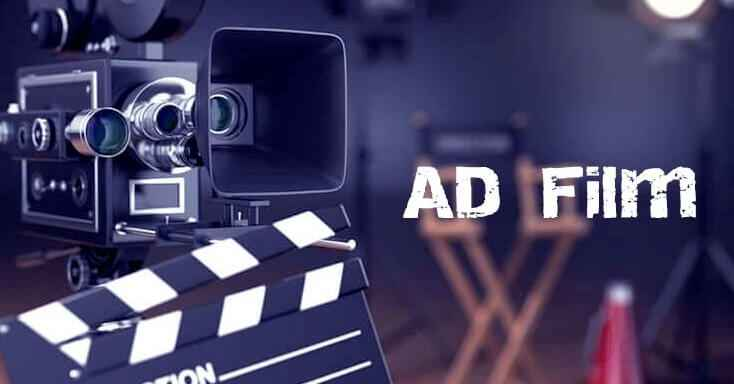

We tell stories that connect. Whether it’s a heartfelt tale, a fun vibe, or something bold and creative, we craft ad films that bring your brand’s message to life. Starting with brainstorming, we work closely with you to get the concept just right. We focus on creating ad films that resonate with audiences. For us, Ad Film isn’t just about showing your product but it’s about building an emotional connection. Whether it’s a 15-second clip for social media or a longer narrative for television, we tailor every detail to make your brand memorable. Our team combines the latest technology with timeless storytelling techniques, ensuring your advertisement looks as good as it feels. Every scene is carefully planned to create a powerful visual experience that reflects your brand identity. From casting the perfect actors to scouting the ideal locations, we handle every aspect of the production process. Our team ensures smooth planning, professional filming, creative direction, and flawless execution from start to finish. Editing, color grading, sound design, and music selection all come together to create a polished final product. Every detail is refined to deliver a high-quality advertisement that captures attention and leaves a lasting impression. With Infyreach Solutions Pvt. Ltd., you're not just getting an advertisement—you’re getting a creative visual story that communicates your brand in the most engaging and memorable way possible.